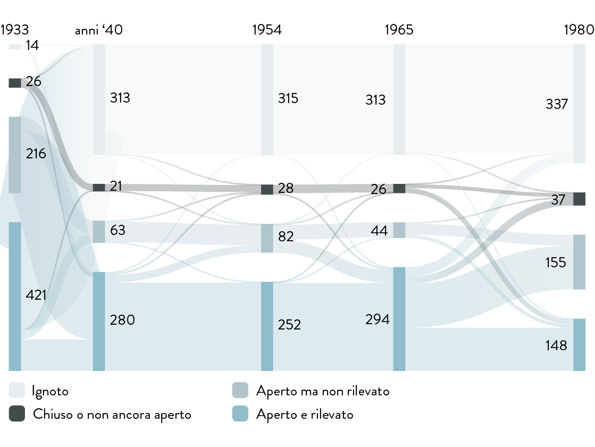
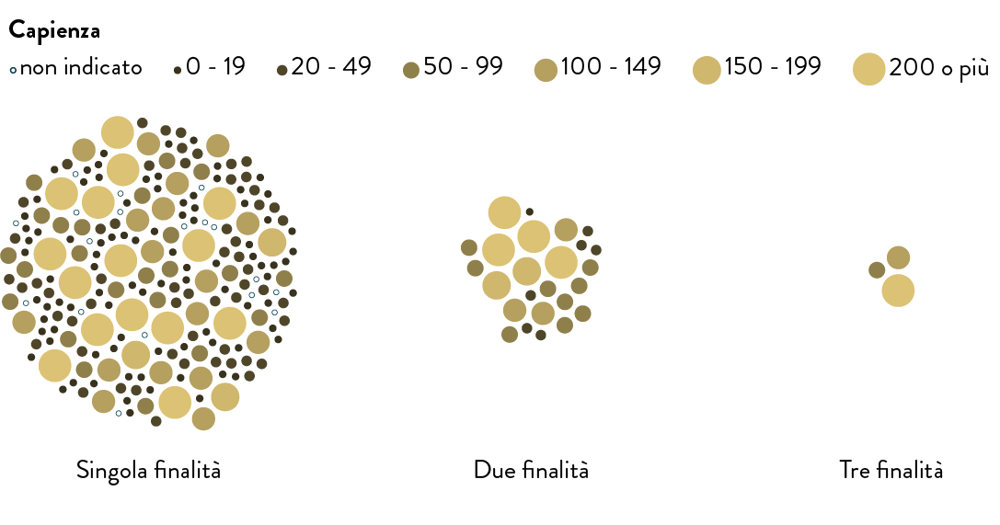
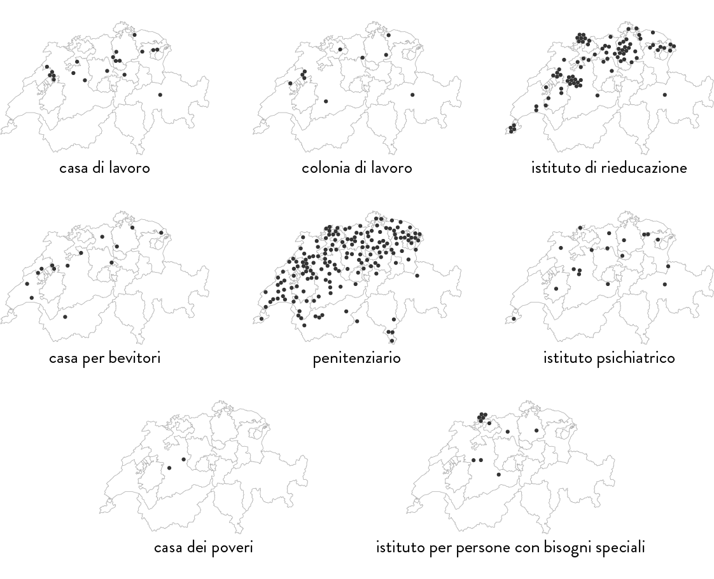
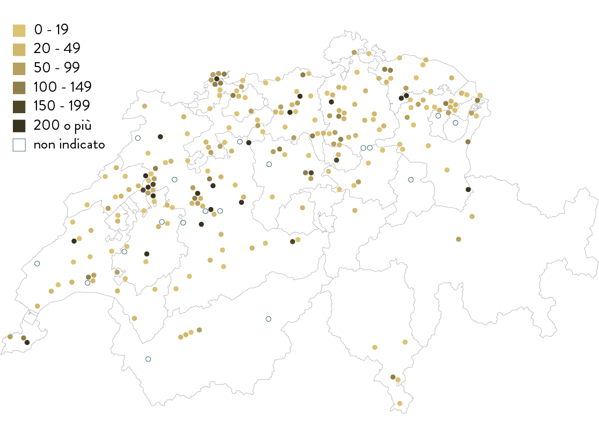
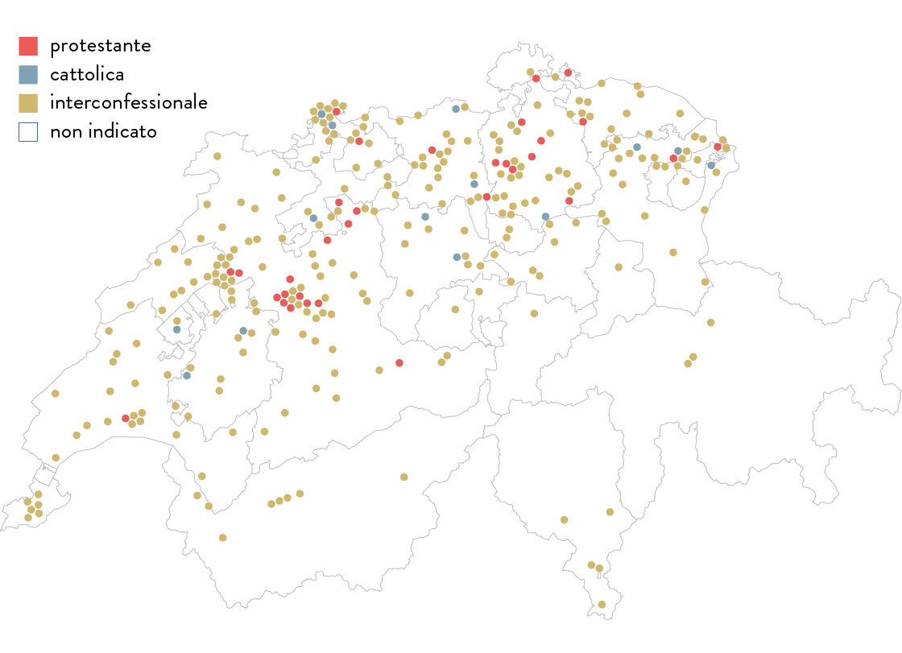
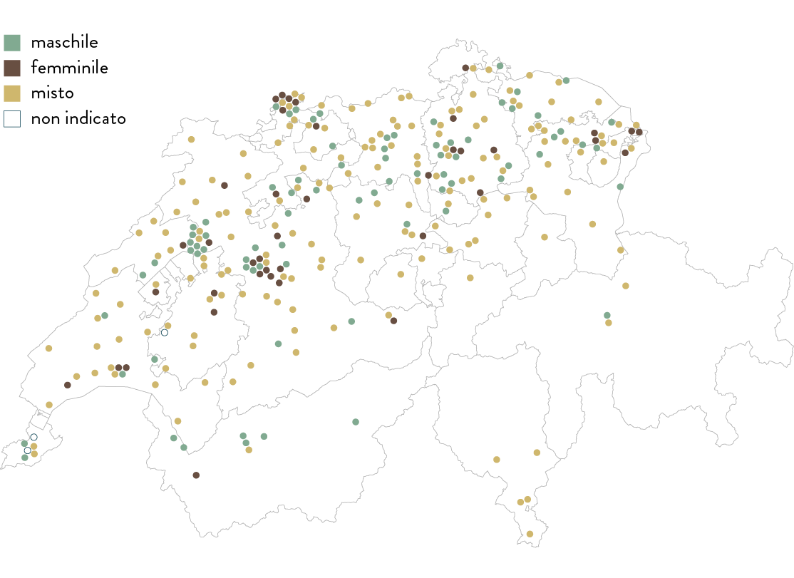
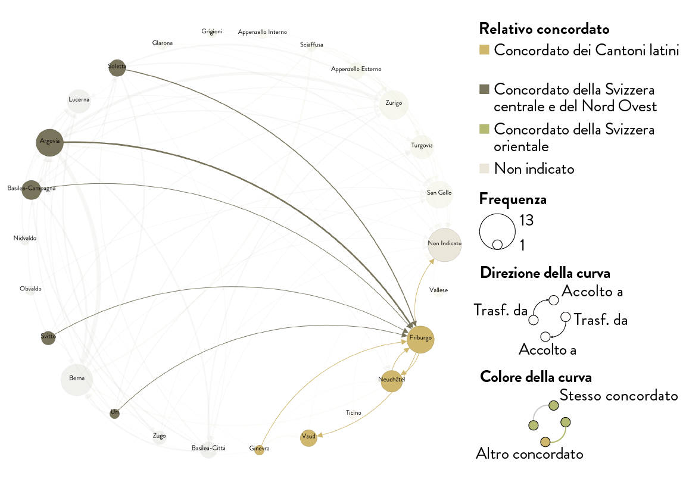
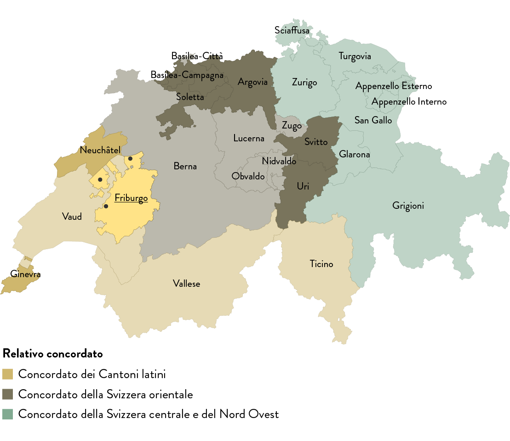

Caricamento dati…
Nella maggior parte del corpus legislativo svizzero i principali addebiti che venivano mossi per disporre e giustificare l’internamento amministrativo erano «indolente», «alcolizzato» e «depravato». Questa specifica misura coercitiva a scopo assistenziale era uno strumento di cui si avvalevano le autorità comunali e cantonali per internare soggetti con presunti disturbi comportamentali in istituti correzionali e rieducativi di diversa natura. Spesso questo processo non coinvolgeva un tribunale cantonale, per cui l’internamento in via amministrativa violava il principio fondamentale della separazione dei poteri. All’epoca si riteneva che tali individui dovessero essere esclusi dalla società, rieducati in ambienti confinati e infine reintegrati nella comunità. Per conseguire questo «obiettivo di profilassi sociale» i Comuni e i Cantoni misero a punto diverse strategie. Dato che la creazione e il mantenimento, a livello cantonale, di strutture quali carceri, case di lavoro o istituti psichiatrici comportava costi elevati, non tutti i Cantoni potevano e volevano investire sul proprio territorio. Di conseguenza, le autorità internavano in via amministrativa cittadini di un Cantone in strutture situate in un altro Cantone, contribuendo così a farle funzionare ai limiti delle loro capacità. Questo è uno dei principali motivi della creazione di cosiddetti istituti polifunzionali, in cui veniva rinchiuso sia chi doveva scontare una condanna penale sia chi era internato per via amministrativa.

Img. 1.1 – Archivi dello Stato di Friburgo (AEF)/Staatsarchiv Freiburg (StAF), EB Div Photos 10 I, Bellechasse, Fotografie aeree di Bellechasse, 1948, Sezione 1, immagine 3 : «vue générale». [Photographe: Swissair Lufbild, Verlag O. Wyrsch, Wabern b. Bern]
Una delle finalità della Commissione peritale indipendente è la realizzazione di analisi quantitative sul panorama degli istituti volte a caratterizzare in maniera più precisa le strutture e le autorità che disponevano gli internamenti. In tal modo è stato possibile ricostruire la topografia dell’internamento amministrativo sulla base di registri risalenti al 1933, agli anni Quaranta, al 1954, al 1965 e al 1980. In tali documenti sono riportati l’ubicazione degli istituti, i dati salienti sulla finalità, sulla capienza e sulle autorità che disponevano gli internamenti. Lavorando sulle fonti storiche è stato necessario tenere conto che rappresentano il punto di vista dei diversi autori. Sulla base dei dati raccolti sono state realizzate mappe interattive e grafici con l’ausilio di DensityDesign per approfondire il contesto storico e geografico degli internamenti amministrativi.
La narrazione si articola in quattro capitoli. All’inizio vengono descritti e contestualizzati i registri e i rispettivi punti di vista. Poi i dati sono trasferiti su mappe e vengono effettuati abbinamenti tra diversi aspetti, quali tipologie di istituti, capienza o divisione per genere. Stabilendo liberamente le correlazioni nel capitolo successivo è possibile caratterizzare con maggiore precisione le diverse tipologie di istituti. L’ultimo capitolo dedicato al Cantone di Friburgo e agli istituti di Bellechasse spiega come le autorità disponessero gli internamenti amministrativi e rivela l’esistenza di una rete intercantonale. Ogni grafico consente di scegliere liberamente tra diversi anni considerati e varie categorie. Cliccando sui singoli elementi dei grafici si possono ottenere maggiori informazioni. È inoltre disponibile un glossario esauriente.
Tutti i dati in forma non elaborata e la documentazione relativa ad ogni visualizzazione sono disponibili sul portale di Open Data svizzero a questo indirizzo: opendata.swiss/it/dataset/anstaltstopografie.
Sulla pagina è possibile trovare:
I glossari interattivi possono essere visualizzati a questi indirizzi:
La cronologia copre il periodo che va dal 1930 al 1980. Dall’analisi di quest’ultimo si individuano, da una parte, alcuni punti fondamentali della storia sociale della Svizzera, e dall’altra, una panoramica del quadro giuridico e degli istituti aperti o chiusi in tale lasso di tempo. Procedendo su questi tre livelli è possibile collocare nel contesto storico il fenomeno dell’internamento amministrativo e i suddetti registri.
Il grafico rappresenta i principali eventi avvenuti tra il 1930 e il 1990. Posiziona il cursore del mouse sopra qualsiasi elemento per visualizzare il nome e la data degli eventi, clicca per rivelare maggiori informazioni nel pannello laterale.
Timeline of major events
Storia sociale: l’introduzione, a partire dagli anni Quaranta, delle misure di sicurezza sociale tuttora in vigore (AVS, AI, assegni familiari, assicurazione contro la disoccupazione ecc.) e la ratifica da parte della Svizzera della Convenzione europea dei diritti dell’uomo nel 1974 influenzarono notevolmente le decisioni delle autorità poiché offrivano alternative nella lotta contro il rischio di povertà dei singoli individui.
Basi legali: quali erano le leggi federali e cantonali determinanti ai fini dell’internamento amministrativo? Si evince quanto il ricorso a questa misura coercitiva a scopo assistenziale dipendesse dalle strutture cantonali. Al contempo si nota che il termine «internamento amministrativo» figura solo di rado nei testi legislativi; molto più spesso si fa riferimento ad aspetti caratteriali (ad es. indolente, depravato, alcolizzato).
Visualizzazione 1.1 – Cronologia degli eventi principali
Apri in una finestra separata
In questa sezione sono presentate le fonti e ne viene specificata la qualità e la significatività. Le mappe e i grafici sono stati realizzati sulla base di cinque registri, compilati in varie epoche da diversi autori, in cui sono elencati istituti e centri penitenziari e di esecuzione delle pene. In comune hanno il fatto che coprivano l’intero territorio svizzero, erano estremamente dettagliati e all’epoca fungevano da testi di riferimento (manuali di consultazione) per le autorità che disponevano gli internamenti.
Il grafico rappresenta gli istituti censiti e il loro corrispondente stato anno dopo anno. scorri verso il basso per passare da questo mosaic plot a un sankey diagram, clicca sui blocchi o sui flussi per rivelare la lista degli istituti corrispoindenti nel pannello laterale.
Tuttavia, il punto di vista e quindi la significatività dei singoli registri variano notevolmente. Tre di essi contenevano tutti i dati necessari alla realizzazione di questi grafici (1954, 1965, 1980). Per gli altri due si è dovuto attingere a fonti integrative (1933, 1940). Le case dei poveri figurano solo nella fonte più antica, mentre nella più recente sono menzionate soprattutto le carceri. Ciò evidenzia uno dei limiti di questi registri, in quanto, ad esempio, le case dei poveri svolgevano un ruolo decisivo per l’assistenza agli anziani indigenti e l’internamento in età avanzata.
Registri e istituti
Oltre al suddetto mosaic plot, il successivo sankey diagram evidenzia questo cambio di prospettiva negli anni considerati. Nel complesso, in questi registri sono elencati 648 istituti che però non appaiono necessariamente tutti in ogni sondaggio (registro). Quanti istituti erano funzionanti, ma non sono stati rilevati dai diversi autori (punti ciechi)? Inoltre, nel corso degli anni alcuni istituti furono chiusi e altri furono aperti.
Registri e istituti
Negli istituti si veniva rinchiusi per diversi motivi (diritto penale e civile, internamento amministrativo/leggi cantonali sull’internamento). Da questo punto di vista, un tipico esempio è rappresentato dal complesso di Bellechasse, che ospitava al suo interno un carcere, un istituto di cura per bevitori e un istituto di rieducazione attraverso il lavoro. Come si evince dal grafico, spesso questi istituti avevano una o più finalità. Si noti, ad esempio, che nel 1954 era comune l’abbinamento di centro di cura dell’alcolismo e istituto psichiatrico.
Nel grafico precedente, gli istituti sono raggruppati a seconda del numero di tipologie di internati che ospitavano. Posiziona il cursore del mouse sopra gli elementi per visualizzare il nome e le posizioni degli istituti, clicca per rivelare maggiori informazioni nel pannello laterale, come ad esempio la finalità degli istituti. Seleziona un anno differente usando il menu presente nella parte superiore della visualizzazione. Posiziona il cursore del mouse sugli elementi della legenda per evidenziare gli elementi corrispondenti.
Finalità e tipologia degli istituti nel 1954
Visualizzazione 1.3 – Finalità e tipologia degli istituti
Open in a separate window
Questa cartina offre una panoramica dei 648 istituti riportati nelle fonti nel periodo considerato. Si individuano aree di notevole concentrazione e «lacune» nella distribuzione geografica. Nel 19541954 ad esempio, la maggior parte degli istituti menzionati era situata nell’Altopiano. Come si vede dalla visualizzazione successivo del 19651965, numerosi istituti si trovavano in aree urbane, come Zurigo, Basilea, Berna e Ginevra, ma anche in zone piuttosto rurali come il Seeland.
La mappa a lato mostra tutti gli istituti senza considerarne la tipologia o altre proprietà. Posiziona il cursore del mouse sopra gli elementi per visualizzare il nome e le posizioni degli istituti, clicca per rivelare maggiori informazioni nel pannello laterale. Seleziona anni differenti usando il menu presente nella parte superiore della visualizzazione.
Locations of facilities

Visualizzazione 2.1 – Panoramica geografica degli istituti
Open in a separate window
Nel panorama svizzero degli istituti si distinguevano le seguenti tipologie: istituti per lavori forzati, colonie di lavoro, istituti di rieducazione per giovani adulti, istituti di cura per bevitori, penitenziari, istituti psichiatrici, case comunali dei poveri (figurano solo nella fonte del 19331933 ), e istituti per persone con bisogni speciali. In tutti questi istituti venivano effettuati internamenti amministrativi. Uno sguardo al 19651965, rivela una distribuzione geografica estremamente omogenea delle carceri su tutto il territorio nazionale: in ogni distretto/circoscrizione vi era, infatti, un piccolo penitenziario. È inoltre evidente che gli istituti di rieducazione sorgevano perlopiù nelle zone rurali. Diversi istituti per lavori forzati vennero costruiti in aree un tempo paludose, poi bonificate, in zone pianeggianti come il Seeland (istituti di Bellechasse, Witzwil e St. Johannsen, e l’istituto per lavori forzati di Tannenhof) o la pianura dell’Orbe (Etablissements de la Plaine de l'Orbe).
Gli istituti sono mostrati su 8 mappe differenti a seconda delle loro finalità. Clicca sul nome della tipologia per ingrandire la mappa corrispondente, poi posiziona il cursore del mouse e clicca sugli elementi per rivelare maggiori informazioni.
Distribuzione in base alla tipologia di istituto nel 1965
Visualizzazione 2.2 – Distribuzione in base alla tipologia di istituto
Open in a separate window
Questo grafico mostra il numero di posti disponibili nei singoli istituti di esecuzione delle pene e delle misure. Anche in questo caso è chiara la varietà degli istituti in termini di capienza, dai più piccoli con 19 posti ai più grandi con 150 o addirittura oltre 200 posti.
La mappa mostra gli istituti e la loro rispettiva capienza. Posiziona il cursore del mouse o clicca sugli elementi per rivelare maggiori informazioni. Posiziona il cursore del mouse sugli elementi della legenda per evidenziare gli elementi corrispondenti.
Se si considerano soltanto gli istituti per lavori forzati, le colonie di lavoro e gli istituti di rieducazione, nel 19541954, quasi un quinto dei posti disponibili in Svizzera era concentrato in cinque istituti del Seeland: gli istituti di Bellechasse e Witzwil, l’istituto per lavori forzati di Tannenhof, l’istituto di St. Johannsen e l’istituto statale di rieducazione per ragazzi di Erlach. Nel complesso, si tratta di 1520 posti, su un totale stimato di 9000. Molti di questi internati erano assegnati soprattutto al lavoro nei campi e fornivano quindi un notevole contributo alle entrate degli istituti. Witzwil e Bellechasse sono tuttora due dei maggiori produttori agricoli svizzeri.
Distribuzione geografica in base al numero di posti nel 1954
Visualisation 2.3 – Distribuzione geografica in base alla capienza
Open in a separate window
La confessione religiosa e il genere erano due dei principali criteri di distribuzione all’interno degli istituti. Questi ultimi si dividevano in interconfessionali, protestanti e cattolici. Per quanto riguarda le case dei poveri, la confessione religiosa era perlopiù ignota. Gli istituti interconfessionali spesso erano a gestione statale e disponevano di un elevato numero di posti, mentre quelli cattolici o protestanti erano piuttosto a gestione privata e avevano una capienza limitata.
La mappa mostra gli istituti e la loro rispettiva confessione religiosa. Posiziona il cursore del mouse o clicca sugli elementi per rivelare maggiori informazioni. Posiziona il cursore del mouse sugli elementi della legenda per evidenziare gli elementi corrispondenti.
Ad esempio, nel 19651965 in totale l’84 per cento degli istituti era interconfessionale (per la maggior parte si trattava di carceri distrettuali), l’11 per cento cattolico e il 5 per cento protestante. Di solito, le strutture riservate a un’unica confessione religiosa erano istituti di rieducazione. Tra gli istituti cattolici figurano lo Schweizerisches Mädchenheim (pensionato svizzero per ragazze) di Richterswil, il Kinderdörfli (istituto per bambini) di Rathausen e l’istituto Bon Pasteur di Lully, mentre tra i protestanti troviamo il Mütter- und Kinderheim (casa per madri e bambini) di Lausen, il Landheim Brüttisellen di Bassersdorf e il Gemeinnützige Erziehungsheim (istituto di rieducazione) Schloss Kasteln di Oberflachs.
Distribuzione degli internati in base alla confessione religiosa nel 1965
Visualizzazione 2.4 – Distribuzione degli internati in base alla confessione religiosa
Open in a separate window
Il secondo principale criterio di distribuzione degli internati nei diversi istituti era il genere. Sempre nel 19651965, la cartina mostra che il 59 per cento degli istituti era misto, il 27 per cento esclusivamente maschile e il 14 per cento esclusivamente femminile. Anche in questo caso erano soprattutto le carceri distrettuali a essere miste. Se si esclude questa tipologia di istituti, la proporzione cambia completamente: metà dei posti rimanenti era destinata agli uomini e un quarto esclusivamente alle donne o a entrambi i generi.
La mappa mostra gli istituti e il genere dei loro ospiti. Posiziona il cursore del mouse o clicca sugli elementi per rivelare maggiori informazioni. Posiziona il cursore del mouse sugli elementi della legenda per evidenziare gli elementi corrispondenti.
Distribuzione degli internati in base al genere nel 1965
Visualizzazione 2.5 – Distribuzione degli internati in base al genere
Open in a separate window
Questo grafico consente di abbinare, a proprio piacimento, determinati fattori tratti dalle fonti e di individuarne la frequenza: più grande sarà il punto, maggiore sarà il numero di istituti che hanno in comune quell’abbinamento. La frequenza delle carceri distrettuali destinate ad accogliere entrambi i generi La frequenza delle carceri distrettuali destinate ad accogliere entrambi i generi viene evidenziata anche qui dalla grandezza del punto che si ottiene selezionando «sesso» e «tipologia». Sono invece rare, ad esempio, le carceri esclusivamente femminili.
Le strutture che hanno visto i collocamenti più bilanciati rispetto al genere dei detenuti sono state quelle corrispondenti alla tipologia ‘istituto di rieducazione’. La detenzione amministrativa all’interno di questi istituti aveva solitamente luogo quando gli adolescenti avevano tra i sedici e i vent’anni e già dal loro nome è possibile identificare lo scopo sociale di questi centri: il ‘Anstalt für gefährdete Mädchen Bern-Brunnadern’ (ragazze a rischio) oppure la ‘Maison d'éducation Bellevue’ (casa di educazione) avevano l’obiettivo di insegnare alle ragazze e alle donne la modestia e la riservatezza, mentre l’obiettivo del ‘Kreckelhof Herisau’ o della struttura rurale ‘Landerziehungsheim Albisbrunnen’ era quello di abituare al lavoro giovani uomini. La coercizione al lavoro forzato è stata principalmente indirizzata agli uomini e non c’è una vera e propria corrispondenza per il genere femminile, neppure per quanto riguarda le colonie di lavoro. Le uniche eccezioni sono state ‘Arbeits- und Strafanstalt Hindelbank’e ‘Frauenheim Ulmenhof’.
Correlation matrix: gender ratio and facility types
A completamento di questa sezione, il grafico di lato mostra le categorie di organi decisionali coinvolti nell’internamento amministrativoorgani decisionali coinvolti nell’internamento amministrativo , che potevano disporre l’internamento in un istituto. La vasta gamma di autorità comprende tra le altre autorità amministrative cantonali, polizia, autorità tutelari, autorità assistenziali. I responsabili variavano a seconda dei Cantoni e dei casi, il che dimostra anche quanto fosse effettivamente diffuso il ricorso all’internamento amministrativo.
Matrice delle correlazioni: organi decisionali e tipologie di istituti
Molte altre interessanti combinazioni possono essere analizzate, ad esempio:
capienza degli istituti e tipologie
capienza degli istituti e confessioni religiose
Grazie a questo grafico è possibile comparare tra di loro le proprietà degli istituti: usa i menù a tendina nella parte superiore della visualizzazione per cambiare la selezione. Clicca sulle circonferenze per rivelare la lista degli istituti corrispondenti. Seleziona anni differenti usando il menù presente nella parte superiore della visualizzazione.
In Svizzera l’internamento amministrativo si basava su un corpus di leggi cantonali complesso ed eterogeneo nonché sul Codice civile svizzero. Ogni Cantone stabiliva le proprie procedure e designava le autorità competenti in materia a livello locale, regionale o cantonale. Pertanto l’iter dell’internamento amministrativo poteva assumere le forme più disparate.

Img. 4.1 – Archivi dello Stato di Friburgo (AEF)/Staatsarchiv Freiburg (StAF), EB Div Photos 13, Bellechasse, Ancienne colonie, maison de rééducation au travail, 20-21 gennaio 1938, Sezione V, immagine 1 : «Dalle des combles».
Nel Cantone di Friburgo, ad esempio, come mostrato negli articoli dal 30 al 43 della legge Loi sur l'assistance from July 17th 1951, a disporre le varie misure di internamento erano soprattutto i prefetti (autorità distrettuali) in qualità di rappresentanti dell’amministrazione cantonale nelle circoscrizioni e nei distretti. L’internamento amministrativo doveva rispettare soltanto pochi criteri formali e spesso veniva effettuato con una procedura abbreviata, in cui si presupponeva che il prefetto conducesse le indagini, il più delle volte sulla base delle accuse mosse dalla polizia o da altre autorità. In ultima analisi, la decisione in merito a un eventuale internamento amministrativo spettava a lui. Al soggetto in questione si concedevano garanzie legali minime, ossia il diritto di essere ascoltato e di presentare ricorso. In virtù di concordati intercantonali, nel complesso di Bellechasse non venivano internati solo gli abitanti del Cantone di Friburgo, ma anche quelli di altri Cantoni. La visualizzazione seguente ricostruisce la rete intercantonale esistente.
Questo grafico illustra la collaborazione tra Cantoni nel campo dell’internamento amministrativo (ad es. quali Cantoni mandavano i propri abitanti nel complesso di Bellechasse nel Cantone di Friburgo). Talvolta le fonti non hanno permesso di appurare in quale istituto venissero inviati i soggetti da internare al di fuori dei confini cantonali. In questi casi, nel grafico figura destinazione «ignota». Un altro aspetto interessante che emerge dal grafico è che esisteva una rete intercantonale ancor prima che venissero firmati concordati in materia di esecuzione delle pene e che essa non coincideva necessariamente con gli accordi stipulati in seguito, grazie ai quali anche i Cantoni privi di appositi istituti (ad es. Nidvaldo) potevano effettuare internamenti amministrativi.
Il grafico sottostante rappresenta gli scambi di detenuti fra i vari cantoni. Clicca su una circonferenza per evidenziare gli scambi in cui il cantone corrispondente è stato coinvolto. Fai doppio click per rivelare la lista degli istituti coinvolti.
Network between cantons
La cartina sottostante mostra le connessioni tra Cantoni di provenienza e di destinazione. Selezionando un Cantone, si vede con quali altri era connesso. È inoltre possibile visualizzare gli istituti in cui le autorità internavano i propri abitanti al di fuori dai confini cantonali.
Nel 1954 il Canton Friburgo ospitava le due grandi strutture «Etablissements psychiatrique de Marsens» e gli «Anstalten Bellechasse», i due «Instituts Bon Pasteur» di Lully e Villars-Les-Joncs, entrambi riservati a ragazze cattoliche, e l'«Institut St. Nicolas» per giovani cattolici di entrambi i sessi. Ciononostante non mancavano internamenti in istituti di altri Cantoni: le ragazze presso la «Maison d'éducation Bellevue» nel Canton Neuchâtel e i ragazzi presso l'«Institut Romand d'Education» nel Canton Vaud.
Accepting institutions into Fribourg in 1954
La situazione nel Canton Ginevra era diversa: pur disponendo di un istituto psichiatrico, di una prigione e di un foyer per uomini, i giovani oggetto di un internamento amministrativo venivano collocati nel vicino Canton Vaud, ma anche nei lontani Cantoni di Berna («Kantonale Zwangserziehungsanstalt Tessenberg») e Argovia («Staatliche Zwangserziehungsanstalt Aarburg»). Entrambi questi istituti ospitavano giovani uomini, mentre la «Colonie pénitentiaire de Rolle» o la «Maison d'éducation Bellevue» erano strutture femminili. Nel settore della rieducazione e dell’esecuzione delle pene e delle misure (p. es. «Anstalten Bellechasse»), il Canton Ginevra ricorreva quindi alla rete intercantonale.
La mappa rappresenta gli scambi fra un cantone e tutti gli istituti appartenenti ad altri cantoni. Se qualcuno è stato mandato dal cantone di origine ad un istituto esterno allora è esistito uno scambio. Sfortunatamente non abbiamo informazioni riguardanti la quantità di persone che sono state costrette a spostarsi. Per ogni collegamento che è stato rappresentato significa che c’è stato il trasferimento di almeno un detenuto.
Clicca su un cantone per vedere gli istituti corrispondenti, usa il menù presente nella parte superiore della visualizzazione per selezionare tra tutti istituti che accettano detenuti dalcantone selezionato o tra gli istituti del cantone selezionato che accettano detenuti dall’esterno. Scorri tra i vari anni e clicca sulle circonferenze per rivelare maggiori informazioni nel pannello laterale.
Concordato dei Cantoni latini
Concordato della Svizzera orientale
Concordato della Svizzera centrale e del Nord Ovest
Ospitano detenuti
Altri istituti
In che modo un internato in via amministrativa poteva uscire dall’istituto? Quando si considerava raggiunto l’obiettivo principale di «(ri)educazione» di un internamento amministrativo? Chi decideva quando poteva essere dimesso un individuo? Una volta uscito dall’istituto, un internato in via amministrativa era davvero libero? Proprio a tali questioni è dedicato il capitolo sulla prassi della liberazione.
La liberazione poteva essere definitiva o in regime di libertà condizionale. Ad esempio, se negli anni Venti un internato nella casa di lavoro per bevitori di Tannenhof («maison de travail pour buveurs, Sapinière»), che faceva parte del complesso di Bellechasse nel Cantone di Friburgo, aspirava alla liberazione anticipata, di fatto il potere decisionale era nelle mani del direttore dell’istituto. La sua perizia era determinante per valutare il «recupero» dell'internato.

Img. 4.2 – Archivio dello Stato di Friburgo (AEF)/Staatsarchiv Freiburg (StAF), EB Div Photos 10 II, Bellechasse, «Photographie aérienne de Bellechasse», 1956-1972. [Photographe: B. Bachmann, Bern]
Ne conseguiva una forte pressione sugli internati affinché si adattassero alla vita da reclusi e non deludessero le aspettative nutrite nei loro confronti riguardo al lavoro e al comportamento. La libertà condizionale come fase di transizione dall’internamento alla liberazione comportava essenzialmente – e non solo a Bellechasse e negli anni Venti – il rispetto di regole di condotta nel periodo di prova, ad esempio il divieto di frequentare osterie o di consumare bevande alcoliche. L’internato in regime di libertà condizionale era sottoposto al controllo delle autorità locali o del personale di sorveglianza. In caso di violazione delle regole di condotta durante il periodo di riabilitazione, rischiava di essere internato di nuovo. Il fatto che molte persone venissero internate più volte dimostra quanto fosse difficile sfuggire ai controlli.
Dal 1930 al 1980, oltre 640 istituti furono scelti da numerosi responsabili a livello cantonale, comunale o privato per effettuare internamenti amministrativi. Le fonti analizzate hanno rivelato l’esistenza di diverse tipologie di istituti con precise caratteristiche spaziali e cronologiche. Individuando collegamenti tra le autorità e gli istituti a cui si rivolgevano nei Cantoni vicini è stato possibile ricostruire una rete che andava al di là dei confini cantonali e comunali, come dimostra il caso del complesso di Bellechasse. Queste interazioni multilaterali su scala cantonale iniziarono prima che venissero siglati i concordati intercantonali sull’esecuzione delle pene negli anni Sessanta e nella metà degli anni Settanta (in cui alcuni importanti istituti furono destinati ad accogliere internati dei Cantoni appartenenti a tale rete).
Per la prima volta in assoluto, su tutto il territorio nazionale sono stati individuati, descritti con maggiore precisione e collocati sulla carta geografica i riferimenti degli istituti in questione. Il glossario documenta in maniera dettagliata, ma di certo non esaustiva, una vasta gamma di testi normativi cantonali e di istituti. Un approccio quantitativo a questa specifica misura coercitiva a scopo assistenziale consente di approfondire la composizione, lo sviluppo e il funzionamento della topografia dell’internamento amministrativo. I grafici illustrano, inoltre, il modus operandi adottato che ha consentito di ottenere, a partire dai dati grezzi tratti dalle fonti storiche, i primi risultati di ricerca. Da questi ultimi sono emersi interrogativi che troveranno risposta nella pubblicazione finale della Commissione peritale indipendente.

Img. 4.3 – Archivi dello Stato di Friburgo (AEF)/Staatsarchiv Freiburg (StAF), EB Div Photos 24, Bellechasse, «un groupe d'assistés», 1920-1930. [Photographe: Simon Glasson, Bulle]
"Panorama degli istituti svizzeri 1933–1980" è un progetto ideato e sviluppato dalla Commissione Peritale Indipendente (CPI) e il laboratorio di ricerca universitario DensityDesign (DD): Andrea Benedetti (DD), Paolo Ciuccarelli (DD), Marco Dal Molin (CPI), Tommaso Elli (DD), Ernst Guggisberg (CPI), Michele Invernizzi (DD), Michele Mauri (DD), Joséphine Métraux (CPI)
Raccolta e analisi dati: Marco Dal Molin, Ernst Guggisberg, Deborah Morat
Testi: Marco Dal Molin, Nicole Gönitzer, Ernst Guggisberg, Mirjam Häsler, Matthieu Lavoyer, Joséphine Métraux